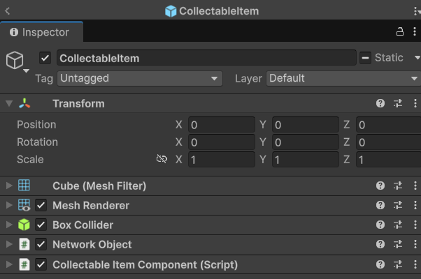

Exercise 6: Customize serializable types
By the end of this exercise you should have a networked collectable item and player's inventory.
Serializing our own NetworkItem
Netcode for GameObjects uses a default serialization pipeline when using RPC's, NetworkVariables, or any other Netcode-related tasks that require serialization. The serialization pipeline looks like this: Custom types => Built-in types => INetworkSerializable
When Netcode for GameObjects first receives a type, it checks for any custom types that you have registered for serialization, then it checks if it's a built-in type, such as a Vector3 or a float. These are handled by default. Otherwise, it checks if the type inherits INetworkSerializable, and if it does, it calls its write methods.
You can use the INetworkSerializable interface to define custom serializable types. This interface has one function: NetworkSerialize<T>(BufferSerializer<T> serializer), which ingests a bi-directional BufferSerializer that you can use to implement bi-directional custom serialization.
INetworkSerializable can be implemented on both managed and unmanaged types, although serializing managed types isn't recommended because it can reduce your game's performance.
Let's implement our own NetworkItem:
using Unity.Netcode;
using System;
public struct NetworkItem : INetworkSerializable, IEquatable<NetworkItem>
{
public uint ItemID;
public int Amount;
public void NetworkSerialize<T>(BufferSerializer<T> serializer) where T : IReaderWriter
{
serializer.SerializeValue(ref ItemID);
serializer.SerializeValue(ref Amount);
}
public bool Equals(NetworkItem other)
{
return ItemID == other.ItemID && Amount == other.Amount;
}
}
In-scene placed NetworkObjects
In-scene placed NetworkObjects are GameObjects with a NetworkObject component that was added to a scene from within the Editor. Our items will be in-scene placed NetworkObjects and when they spawn (when the scene is loaded), we should add the data to each item.
The ItemData
Let's create our own items data:
- Create a ScriptableObject (ItemData) that manages the items data.
- Then create some ItemData and call them "Item_1" and "Item_2" for example.
- Try use different Mesh and Material so we can see differences in the scene.
using UnityEngine;
[CreateAssetMenu(fileName = "ItemData", menuName = "Scriptable Objects/ItemData")]
public class ItemData : ScriptableObject
{
public uint ItemID;
public string ItemName;
public Mesh mesh;
public Material material;
}
The item prefab
Now that we have our data, we can create the prefab. Remember, we only need one prefab and the variaty of items should be managed with the ScriptableObjects.
- Create a CollectableItemComponent script and create (code below)
- Then create a prefab.
- Make sure the prefab is inside the DefaultNetworkPrefabsList (in Assets/DefaultNetworkPrefabsList) or in other NetworkPrefabList that is added to the NetworkManager.
In the following code, the function AssignData is called OnNetworkSpawn. When the player enters the trigger, it calls the PickupItemRpc, only calling from the iventory owner, that tells the server to add the new item to the PlayerInventory.
using UnityEngine;
using Unity.Netcode;
[RequireComponent (typeof(Collider))]
public class CollectableItemComponent : NetworkBehaviour
{
[SerializeField] private ItemData itemData;
[SerializeField] private int amount;
private Collider colliderComponent;
public override void OnNetworkSpawn()
{
base.OnNetworkSpawn();
AssignData();
colliderComponent.isTrigger = true;
}
public override void OnNetworkDespawn()
{
base.OnNetworkDespawn();
gameObject.SetActive(false); //Turn off the game object
}
private void OnTriggerEnter(Collider other)
{
if(!IsClient) return;
if(other.TryGetComponent(out PlayerInventory inventory))
{
if(!inventory.IsOwner) return; //Make sure only the owners inventory gets the object
inventory.PickupItemRpc(itemData.ItemID,this.amount,NetworkObjectId);
}
}
private void AssignData()
{
if(itemData != null)
{
if(TryGetComponent(out MeshFilter meshFilter))
meshFilter.mesh = itemData.mesh;
if(TryGetComponent(out MeshRenderer meshRenderer))
meshRenderer.material = itemData.material;
//Probably there should be a collider data also in order the manage the mesh proportions and the corresponding collider
gameObject.name = itemData.name;
}
}
}
The prefab should look something like this:

As you can see in the previous we are using the uInt variable ItemId to transfer the item through the network (client -> server). We can't transfer more item data because it would affect the bandwith and therefore, the game. The player's inventory would be the one to manage the item data base, in order to convert the itemId into a NetworkItem.
The player's inventory
Create the following component and add it to your player prefab
using Unity.Netcode;
using UnityEngine;
public class PlayerInventory : NetworkBehaviour
{
public NetworkList<NetworkItem> Inventory;
[SerializeField, Tooltip("Add all the items that the player can pick up.")] private ItemData[] itemDatabase;
private void Awake()
{
Inventory = new NetworkList<NetworkItem>();
}
[Rpc(SendTo.Server)]
public void PickupItemRpc(uint pickedItemID, int amount, ulong networkObjectId)
{
NetworkItem newItem = new NetworkItem
{
ItemID = pickedItemID,
Amount = amount
};
Inventory.Add(newItem);
if(NetworkManager.Singleton.SpawnManager.SpawnedObjects.TryGetValue(networkObjectId, out NetworkObject itemToDespawn))
{
itemToDespawn.Despawn(false); //We don't destroy the game object
}
}
public void ShowInventory()
{
foreach (var networkItem in Inventory)
{
// Translate the ID to an item
ItemData itemData = GetItemDataByID(networkItem.ItemID);
Debug.Log($"I have {networkItem.Amount} of {itemData.ItemName}");
}
}
private ItemData GetItemDataByID(uint id)
{
foreach (var item in itemDatabase)
{
if (item.ItemID == id) return item;
}
return null;
}
}
Two important new things are happening in this script:
- First we have a player inventory, which is a NetworkItem list. When PickupItemRpc is called, it creates a new NetworkItem with the pickedItemID (and the amount) and then add it to the NetworkItem list. Then, in order to despawn the object (because is a collectable/pickable object) the code tryes to find it in the SpawnedObjects list with its networkObjectId, if it finds it, calls Despawn(false). It is important to put "false" inside the parenthesis because we don't want to destroy a gameobject, just to remove it from the network, then the Ondespawn function of CollectableItem will call SetActive(true) to make it disappear.
- Secondly, in itemDatabase you should add all the items the player can collect. This itemDatabase will help us to show the item data (for example the mesh or the name) that we were not able to transfer through the RPC (look at ShowInventory and GetItemDataByID).